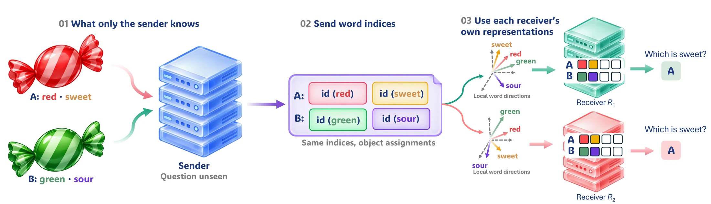
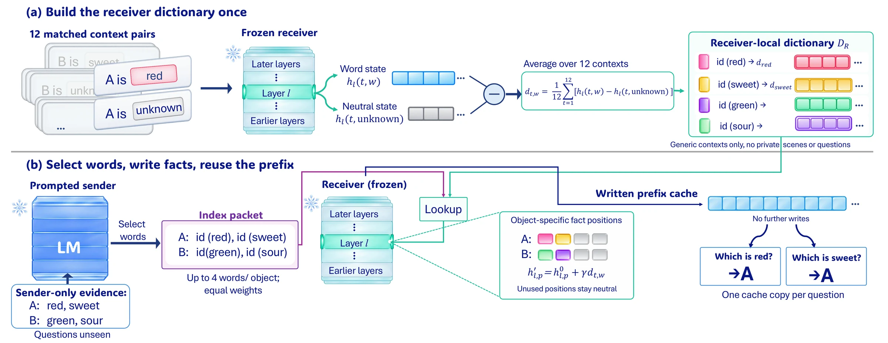
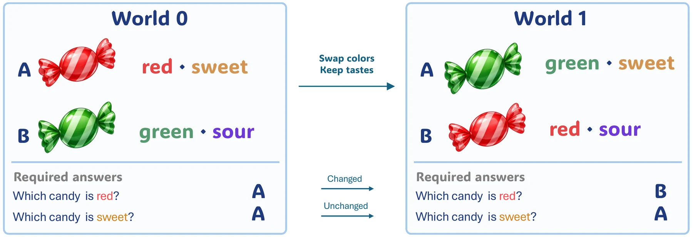

Research · arXiv preprint · 2026
Share the Symbol, Not the Vector:Training-Free Fact Communication Across Language Models
Language models with different architectures can pass facts to each other without fine-tuning or a learned translator. The sender sends only the indices of words from a shared list; each receiver writes those words into its own hidden states with its own word directions, fitted once from its activations.

What crosses between the models is the symbol.
Both models stay frozen. The message is a list of word indices per object; each receiver supplies its own vector for every word.
four-answer success on 572 new scenes, with three different senders and nine newer receivers from five families, without retuning.
above middle-layer writing, at an early write layer chosen on four development receivers and then fixed.
cases where a task-free probe predicted, before measurement, which depths each new receiver can use.
success under new layouts for messages listing every fact; on a landmark task, sender messages reach 23.9–64.0% from 0% without a message, below text.
Multi-agent systems allow language models to solve tasks collaboratively by sharing complementary information. These systems typically communicate through text, while recent approaches also explore exchanging internal model states. However, sharing these states across architectures often requires learned translators or assumptions about model compatibility. We introduce SYNC (Symbol-Indexed Neural Communication), a word-indexed interface that connects heterogeneous models without fine-tuning or a learned translator. From descriptions only it can see, the sender selects words from a shared list and sends their indices for each object, without seeing the questions. The receiver writes the described facts into its hidden states using its own word directions, vectors fitted once from its activations.
We test selective use by swapping one attribute between two objects and requiring correct answers about both changed and unchanged attributes before and after the swap, four answers in total. We choose an early write layer on four development receivers and then fix it. With three different senders and nine newer receivers from five families, four-answer success on new scenes reaches 72.0–98.3%, up to 96 percentage points above middle-layer writing, and the two largest receivers match plain text. A task-free probe predicted in advance which depths each new receiver can use (45 of 45 cases).
Without retuning, messages listing every fact keep 89.6–100% success under new layouts, and sender messages reach 23.9–64.0% on a landmark task with multi-token symbols, below text but from 0% without a message. These results show that shared word indices and receiver-local directions can support selective fact use across model families without additional training.
Construct directions once, then write and reuse facts.
Words provide shared references even when the models' internal representations differ. Nothing is trained: building the directions and choosing where to write them use forward passes only.

Sees the evidence, not the question
- Select words. A prompted sender chooses, for each object, up to four symbols from a fixed list of 221 words that the description supports.
- Send indices. The message carries only the word indices and their object assignments, not vectors or activations.
Uses its own directions
- Look up directions. Each word's direction is the receiver's own hidden-state change when a neutral filler is replaced by the word, averaged over twelve generic contexts and fitted once.
- Write, then answer. The directions are added to slots reserved for each object at an early layer; the receiver answers from the written prefix.
One changed attribute, four required answers.
Each scene has two worlds that describe the same two objects with two attributes. One attribute is swapped between the objects and the other is kept. The sender sees only the descriptions and never the questions; the receiver answers a question about each attribute in each world from the same message. A scene counts only if all four answers are correct, so reacting to every edit, or to none, fails.

What the experiments show.
A fixed interface carries to new senders and receivers.
Four-answer success (%) on 572 confirmation scenes. Internal delivery writes at the early layer fixed on the development receivers, without retuning; the last column writes the Gemma-4 sender's messages at middle layers.
| Gemma-4 sender | Qwen3.6 sender | gpt-oss sender | Gemma-4 sender | |||||
|---|---|---|---|---|---|---|---|---|
| Receiver | Size | Internal | Text | Internal | Text | Internal | Text | Middle |
| Qwen | ||||||||
| Qwen3.5-2B | 2B | 81.2 | 86.7 | 79.3 | 83.8 | 77.5 | 81.5 | 4.7 |
| Qwen3.5-4B | 4B | 96.0 | 96.7 | 93.4 | 94.3 | 89.9 | 88.0 | 3.1 |
| Qwen3.5-9B | 9B | 93.4 | 94.7 | 93.6 | 96.2 | 86.6 | 88.5 | 4.9 |
| Qwen3.5-27B | 27B | 98.3 | 98.6 | 96.4 | 96.7 | 88.8 | 89.1 | 77.8 |
| Qwen3.6-27B | 27B | 97.7 | 98.2 | 96.0 | 96.0 | 90.6 | 89.5 | 82.5 |
| Other families | ||||||||
| Granite-4.1 | 8B | 92.0 | 94.2 | 90.6 | 94.4 | 83.1 | 86.0 | 14.8 |
| OLMo-3 | 7B | 76.0 | 87.8 | 72.0 | 86.1 | 77.1 | 84.6 | 6.3 |
| gpt-oss | 20B | 85.3 | 97.7 | 83.8 | 95.8 | 77.5 | 90.9 | 4.5 |
| Mistral-Small-3.2 | 24B | 96.9 | 96.7 | 94.1 | 96.0 | 89.0 | 88.8 | 0.7 |
Shaded: internal and text within ±3 points at both clustering levels. Italic / “same model”: sender and receiver are the same model, excluded from all counts. Any single symbol–direction reassignment leaves at most 4.4% in every cell.
For facts with equal weights, internal writing shows no consistent advantage: text is similar or up to 14.1 points better on the smaller receivers, the two largest reach parity, internal delivery takes 1.19–1.28 times as long, and on the landmark task text leads by 31.7–63.2 points. The clearest advantage is with graded weights.
Usable depth ranges differ across receivers.
Complete-fact four-answer success on 92 development scenes, one write per depth. Early writing recovers delivery where middle-layer writing fails.
Write strength versus printed weights.
When facts carry weights, write strength beats printed numbers and most other text formats.
For facts with equal weights, internal writing shows no consistent advantage (see R1 above). The clearest advantage is with graded weights.
BibTeX
@misc{li2026sync,
title={Share the Symbol, Not the Vector: Training-Free Fact Communication Across Language Models},
author={Xin Li and Mengbing Liu and Hao Jiang and Xin Gao and Annan Wang and Xingwei Qu and Yichi Zhang and Chau Yuen},
year={2026},
eprint={2610.19696},
archivePrefix={arXiv},
primaryClass={cs.CL},
url={https://arxiv.org/abs/2610.19696},
}
Code, data, directions and paper.
LiXin97/SYNC
Direction fitting, sender and receiver code, scene-bank generators and the scripts that regenerate every table.
XINLI1997/SYNC-data
The 1.6 million per-row records behind every table and figure, laid out to drop into the code repository.
XINLI1997/SYNC-directions
The fitted word directions for each receiver, released under each base model's license.
SYNC on Hugging Face
The paper, the data and the fitted word directions in one place.
arXiv:2610.19696
Full paper with the appendix: protocols, preregistration, controls, uncertainty estimates and numerical checks.